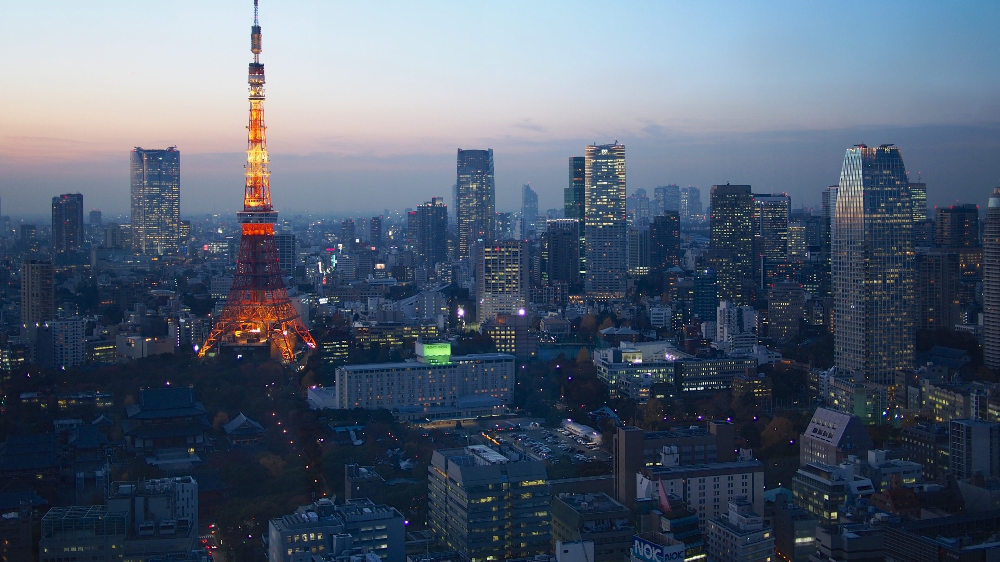
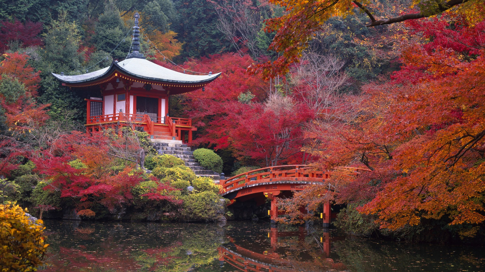
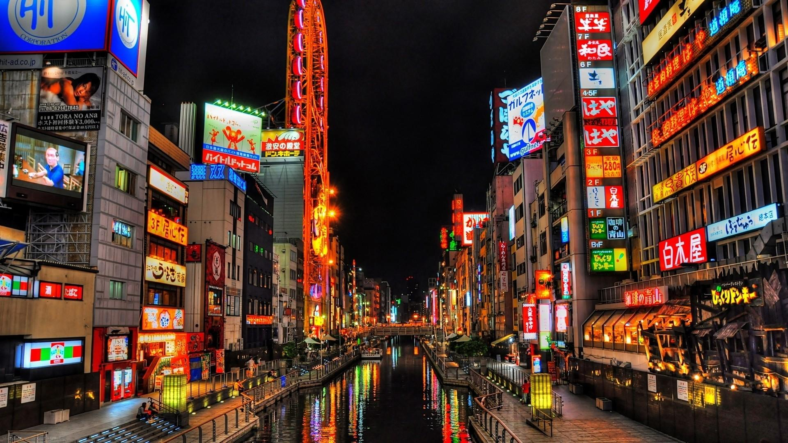

Tokyo

Tokyo mungkin terdengar tidak asing di telinga anda, dimana ibu kota Jepang dikenal sebagai kota perdagangan internasional adalah kota ini. Tokyo berada dekat dengan Gunung Fuji tepatnya terletak di pusat kota yang sangat metropolis dan juga memiliki jumlah penduduk terpadat.
Ibu Kota Jepang ini menawarkan berbagai pilihan hiburan menarik seperti tempat wisata di Tokyo bertema sejarah, budaya, hingga kuliner. Selain itu kota ini juga menawarkan sejumlah wisata ruang hijau di pusat kota. Tidak ketinggalan tempat
hiburan malam seperti bar, klub, toko elektronik hingga pusat perbelanjaan dapat anda temukan.
Masa lalu Tokyo tidak lepas dari tradisi yang masih melekat dalam kehidupan penduduk lokal. Meskipun banyak tempat wisata modern anda juga bisa berwisata religi ke candi, kuil, menyantap makanan khas di kedai sushi, soba, berendam di pemandian
umum serta menikmati waktu bersantai di penginapan ryokan.
Kyoto

Terdapat banyak nama negara bagian dan nama nama kota di Jepang yang sayang untuk dilewatkan termasuk Kyoto. Bagi anda yang belum tahu sejarah salah satu nama kota di Jepang ini kami akan memberikan sedikit ulasannya. Kyoto dulunya merupakan ibukota Jepang
dan pernah menjadi tempat tinggal kaisar dari tahun 1794 sampai dengan 1868. Sekarang Kyoto berubah menjadi kota di negara Jepang terbesar ketujuh dari segi populasi penduduknya, kurang lebih sekitar 1,4 juta jiwa.
Uniknya Kyoto tidak tercantum dari daftar kota sasaran bom atom pada masa Perang Dunia II saat itu karena nilai historisnya yang tinggi. Kyoto juga termasuk daerah kota historis dan religius, bisa dilihat dari banyaknya bangunan kuil yang
tak terhitung jumlahnya. Tidak heran jika Kyoto ini ditetapkan sebagai kota paling indah dan tempat wisata yang harus dikunjungi di Jepang selain Tokyo.
Osaka

Osaka adalah salah satu nama kota di Jepang berawalan o yang juga dikenal sebagai nama kota di Jepang 5 huruf. Kota ini menempati posisi terbesar ketiga untuk jumlah populasi penduduknya tapi yang paling utama kota Osaka adalah sudah menjadi
lokomotif ekonomi selama berabad-abad di wilayah Kansai.
Osaka dulunya lebih dikenal dengan nama Naniwa dimana juga pernah menjabat sebagai ibukota Jepang pertama. Kota ini tidak kalah modis dari Tokyo, bisa anda lihat banyaknya pusat perbelanjaan, restoran dan kehidupan malam yang menyenangkan.
Dibalik gemerlap hiburan di Osaka anda juga bisa menemukan tempat ibadah seperti kuil Kyoto dan Nara, yang menjadi salah satu situs warisan Dunia. Anda bisa mengunjungi objek wisata ini dengan menaiki kereta api dan menempuh perjalanan
sekitar 90 menit. Di Osaka anda menikmati kunjungan ke destinasi populer diantaranya adalah Universal Studios Japan, Floating
Garden Observatory dan Osaka Aquarium.